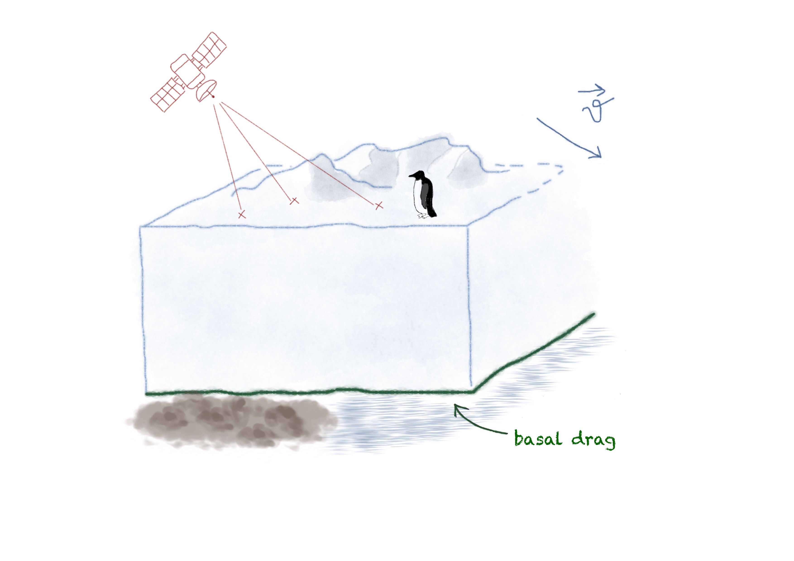

Fanny Seizilles
I am a PhD Student at the Department of Pure Mathematics and Mathematical Statistics at the University of Cambridge, supervised by Richard Nickl and Mark Girolami. I am part of Wolfson college, and of the Cambridge Mathematics of Information cohort. Before this I completed my training as an engineer at CentraleSupélec.
My research interests include Bayesian procedures to solve nonlinear inverse problems. I am also interested in their numerical implementations.

Contact
Email: fps25@cam.ac.uk
Office: D012 @Centre for Mathematical Sciences